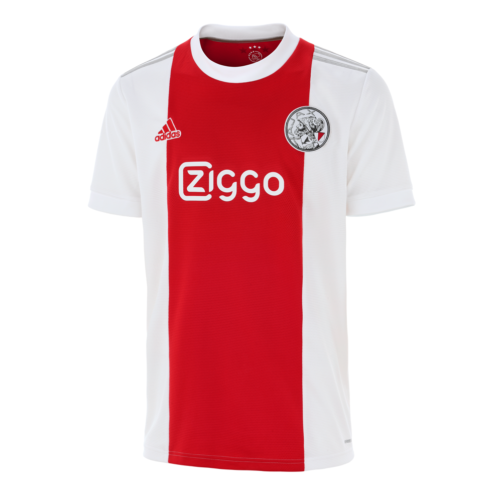

Actualiteit

Het is momenteel januari 2023 en Ajax is een van de topvoetbalteams in Nederland. Het team is momenteel bezig aan een indrukwekkende run in de Eredivisie, waarbij ze momenteel op de eerste plaats staan met een voorsprong van vijf punten op de nummer twee. Ook op het Europese toneel doet Ajax het goed. Het team is momenteel actief in de UEFA Champions League, waarbij ze zich hebben geplaatst voor de knock-out fase. In de achtste finales zullen ze het opnemen tegen Bayern München, een zware tegenstander, maar Ajax heeft al laten zien dat ze meer dan capabel zijn om tegen de grootste teams op te treden. Op individueel niveau zijn er ook een aantal spelers die het goed doen. Zo is de jonge aanvaller Brian Brobbey in het nieuws vanwege zijn indrukwekkende doelpuntenproductie dit seizoen. Ook spelers als Davy Klaassen en Andre Onana zijn belangrijke spelers voor het team en krijgen regelmatig lof van de media. In de transfermarkt is Ajax ook actief geweest. Zo hebben ze onlangs de Braziliaanse middenvelder Antony aangetrokken van Sao Paulo FC voor een bedrag van ongeveer €15 miljoen. Het is de bedoeling dat Antony de komende jaren een belangrijke rol gaat spelen in het middenveld van Ajax. In samenvatting is het momenteel een goede tijd voor Ajax. Het team presteert goed zowel op nationaal als op internationaal niveau en er zijn een aantal individuele spelers die het goed doen. Bovendien is het team actief geweest op de transfermarkt om hun selectie te versterken voor de komende jaren. Al met al lijkt het erop dat Ajax op de goede weg is om de komende tijd succes te behalen.
Jong Ajax, ook wel bekend als Ajax Beloften, is de beloftenploeg van voetbalclub Ajax. Het team speelt in de Eerste Divisie en bestaat uit jonge talentvolle spelers die nog niet klaar zijn voor het eerste team. Het doel van Jong Ajax is om deze spelers voor te bereiden op een plek in het eerste team en hen te helpen hun vaardigheden te verbeteren. Jong Ajax heeft een grote historie van opleiden van talentvolle spelers, veel van hen gingen later door naar het eerste team en speelde voor grote clubs in Europa. Het team presteert goed in de Eerste Divisie dit seizoen, momenteel staat het op de tweede plaats in de competitie. Er zijn tal van jonge talenten in het team zoals Brian Brobbey (zit nu in het eerste team), Ryan Gravenberch, en Lassina Traoré die veel indruk maken en aangewezen worden als toekomstige sterren van Ajax.
De transfermarkt van Ajax is momenteel gericht op het versterken van de selectie voor volgend seizoen. Er zijn geruchten over mogelijke aankopen van spelers zoals Mohammed Kudus van FC Nordsjaelland en Antony van Sao Paulo. Er zijn ook geruchten over verkoop van enkele spelers zoals David Neres naar een buitenlandse club. Het is nog niet duidelijk of deze geruchten waar zijn en de transferperiode is nog niet afgesloten, dus er kunnen nog veranderingen plaatsvinden.